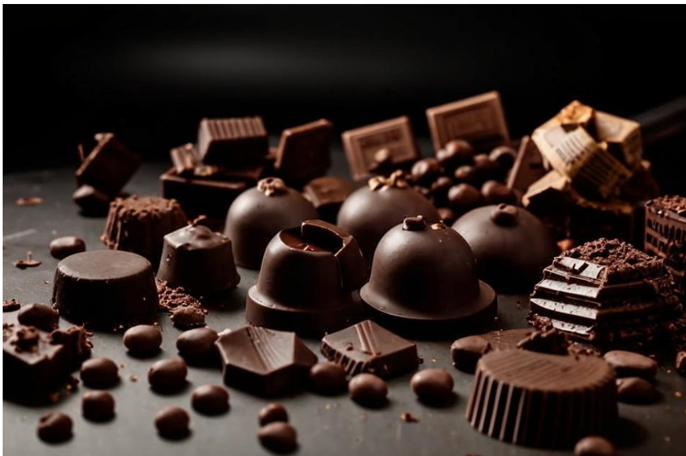
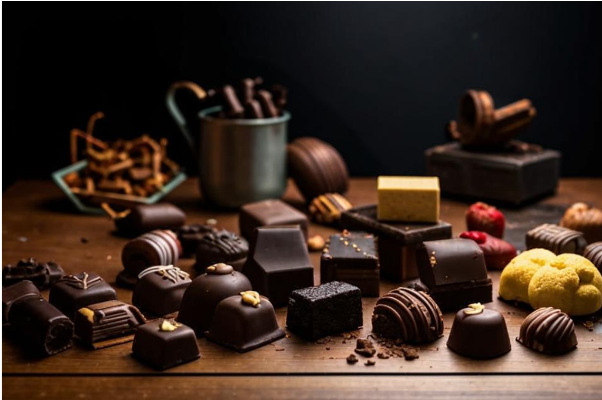
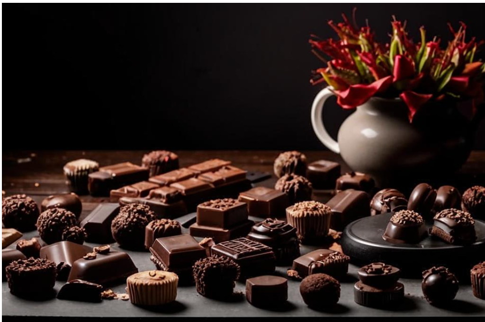
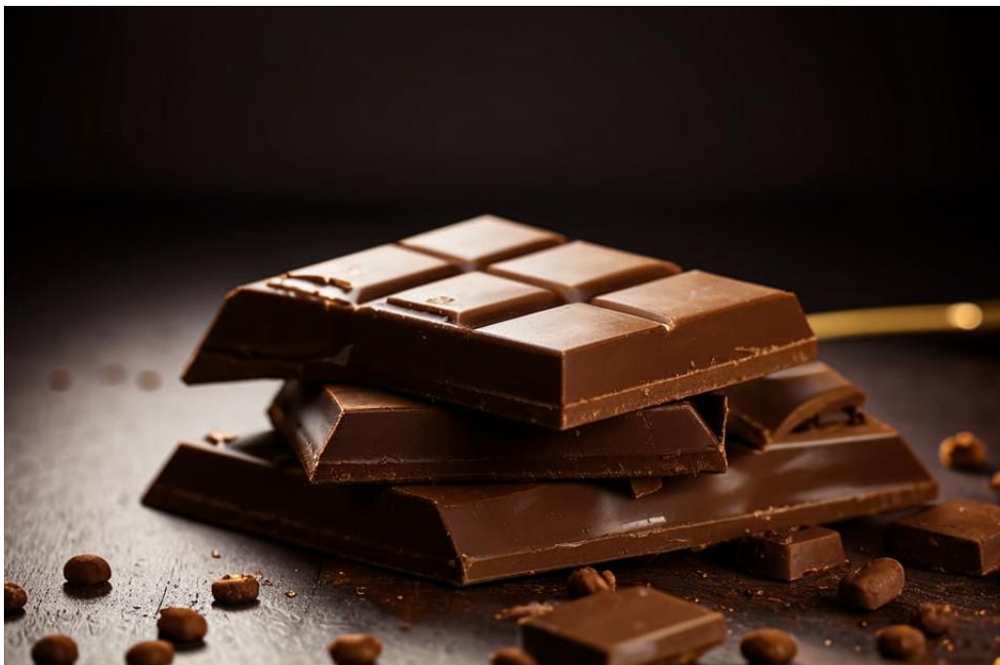
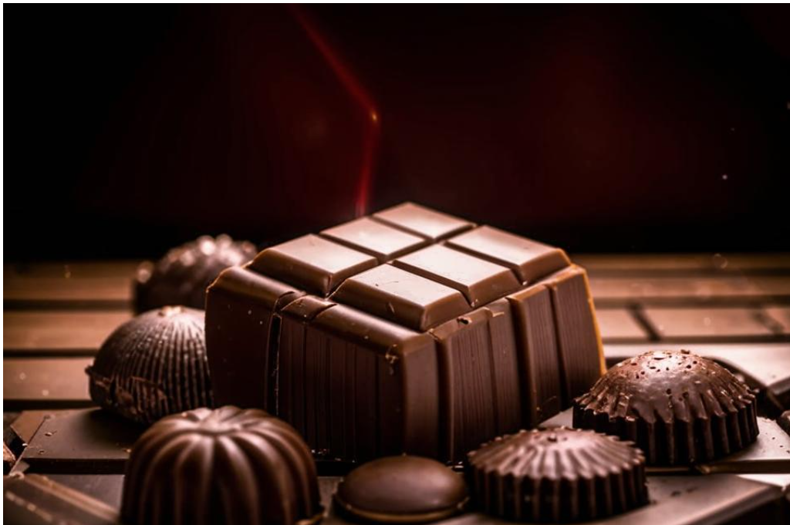

Страны поизводители
Мексика
Шоколад в Мексике имеет глубокие корни и является важной частью культуры, начиная с древних цивилизаций и до современности.- Исторические корни: Шоколад имеет древние корни в Мексике, где его использовали ацтеки и майя. Они называли его "xocolatl" и готовили напиток из какао-бобов, который нередко был горьким и пряным, с добавлением специй, таких как перец и ваниль.
- Какао как валюта: Какао-бобы в Древнем Мексике использовались не только как пищевой продукт, но и как валюта. Это подтверждает его ценность в обществе тех времен.
- Культурное значение: Для майя и ацтеков шоколад имел священное значение. Его использовали в ритуалах и праздниках, а также при подношениях богам.
- Современное использование: В современных мексиканских традициях шоколад продолжает играть важную роль. Он используется в приготовлении таких блюд, как моле (соус на основе шоколада и чили) и традиционных десертов, например, шоколадных напитков.
- Шоколадные фестивали: В Мексике проводятся фестивали шоколада, где демонстрируются различные способы его использования и производства. Эти события помогают сохранить и передать традиции, связанные с шоколадом, будущим поколениям.

Швейцария
Швейцария славится своим качественным шоколадом, который стал символом страны благодаря инновациям, высоким стандартам производства и традициям.- История: Упоминания о шоколаде в Швейцарии датируются 19 веком, когда шоколад был привезён из Южной Америки. Швейцарцы начали экспериментировать с его производством, что привело к созданию уникальных рецептов.
- Иновации: Швейцарцы внедрили множество технических усовершенствований, таких как консистенция и способы обработки. В 1875 году Даниэль Петер добавил молоко в шоколад и создал молочный шоколад, который стал невероятно популярным.
- Производители: Швейцария - дом для множества всемирно известных брендов, таких как Lindt, Toblerone и Cailler. Эти компании известны своим высококачественным шоколадом, который производится из отборных ингредиентов.
- Качество: Швейцарский шоколад отличает исключительно высокое качество. Производители уделяют внимание каждому этапу — от выбора какао-бобов до финальной стадии обработки. Страна также известна своими строгими стандартами натуральности и свежести продуктов.
- Культура и традиции: Шоколад в Швейцарии стал неотъемлемой частью культурной жизни. В стране проводятся фестивали и выставки, где можно попробовать различные виды шоколада и узнать об их производстве.
- Экспорт: Швейцарский шоколад также славится за пределами страны. Он экспортируется по всему миру и ассоциируется с качеством и роскошью.

Бельгия
Бельгийский шоколад славится своим качеством, уникальными рецептами и творческим подходом, что сделало страну одним из крупнейших производителей шоколада в мире.- История: Шоколад начал завоевывать популярность в Бельгии в 17 веке, когда он был привезен в Европу из Латинской Америки. В 19 веке бельгийские мастера начали развивать свои уникальные техники и рецепты.
- Иновации: Бельгия известна своим вкладом в усовершенствование шоколадных технологий, включая разработку pralines (шоколадных конфет с начинкой). В 1912 году Жорж Марсель получил патент на создание первой pralines, что стало важным этапом в кондитерском деле.
- Производители: Бельгия является домом для множества всемирно известных шоколадных брендов, таких как Godiva, Neuhaus и Leonidas. Эти компании славятся своим качеством и изысканным дизайном упаковки.
- Качество: Бельгийский шоколад имеет строгие стандарты качества. Он производится из отборных какао-бобов и часто включает натуральные ингредиенты. Многие производители придерживаются традиционных методов, чтобы сохранить высокие стандарты.
- Культура и традиции: Шоколад в Бельгии не только продукт, но и часть культуры. В стране проводятся шоколадные фестивали, конкурсы и мастер-классы, где люди могут научиться мастерству производства шоколада и попробовать различные сорта.
- Экспорт: Бельгийский шоколад экспортируется по всему миру и считается одним из самых желаемых лакомств. Он ассоциируется с роскошью и высоким качеством, что делает его популярным подарком.

Гана
Шоколад в Гане имеет важное значение как для экономики страны, так и для мировой индустрии шоколада. Вот основные аспекты, связанные с шоколадом и какао в Гане:- Производство: Гана — один из крупнейших производителей какао в мире, наряду с Кот-д'Ивуаром и Индонезией. Какао, выращиваемое в Гане, известно своим высоким качеством и сильным ароматом, что делает его желанным ингредиентом для шоколадных брендов.
- Экспорт: Какао составляет значительную часть экспорта Ганы и играет ключевую роль в экономике страны. Многие фермеры зависят от доходов от его выращивания.
- Устойчивое развитие: Как и в других странах-производителях какао, в Гане существуют проблемы с устойчивым развитием. Фермеры сталкиваются с низкими ценами на какао, изменением климата и заболеваниями растений. Некоторые инициативы предпринимаются для улучшения условий жизни фермеров и повышения устойчивости производства.
- Сертификация: Некоторые ганы какао-кооперативы и фермеры стремятся получить сертификаты Fair Trade и других инициатив, которые способствуют более честной торговле и лучшим условиям для производителей.
- Местное производство: В последние годы в Гане началось развитие местной шоколадной индустрии. Некоторые компании начинают производство шоколада прямо в стране, используя местные какао-бобы. Это способствует укреплению экономики и созданию рабочих мест.
- Дегустации и фестивали: В Гане проводятся мероприятия, посвященные шоколаду, включающие дегустации и фестивали, которые подчеркивают местные продукты и традиции.
- Традиции и обычаи: Какао и шоколад являются важными частью местной культуры, и их часто используют в различных ритуалах и праздниках.

Эквадор
Шоколад в Эквадоре играет важную роль как в экономике, так и в культуре страны. Эта страна известна своим высоким качеством какао и считается родиной некоторых из лучших сортов в мире. Вот основные аспекты, касающиеся шоколада в Эквадоре:- Отборные сорта: Эквадор известен своими уникальными сортами какао, такими как "Arriba Nacional", которые имеют яркий вкус и ароматы. Эти сорта какао считаются "ароматическими" и высоко ценятся на международных рынках.
- Климатические условия: Экваториальное местоположение страны обеспечивает идеальные климатические условия для роста какао. Здесь есть достаточно влаги и тепла, что способствует развитию качественного урожая.
- Сельское хозяйство: Выращивание какао — важный сектор экономики Эквадора, обеспечивающий средства к существованию многим фермерам и семьям.
- Экспорт: Эквадор является одним из крупнейших экспортеров какао в мире. Местные какао-бобы используются для производства шоколада и экспортируются в разные страны, включая США и страны Европы.
- Местные производители: В последние годы в Эквадоре стало активизироваться местное производство шоколада. Многие шоколадные компании используют органическое и устойчивое какао, что помогает поддерживать фермеров и улучшать условия жизни.
- Крафтовый шоколад: В стране процветает рынок крафтового шоколада, где маленькие компании и индивидуальные производители создают шоколад с уникальными вкусами и текстурами.
- Исторические традиции: Какао использовалось местными народами еще до испанского колониального периода для приготовления напитков и в ритуалах. Это влияние сохраняется в традициях.
- Фестивали: В Эквадоре проводятся шоколадные фестивали, на которых гордятся местными продуктами, а посетители могут участвовать в дегустациях и научных семинарах по производству шоколада.
- Социальная ответственность: Многие инициативы направлены на поддержку фермеров, практикующих устойчивое земледелие. Сертификации, такие как Fair Trade, помогают повысить доходы фермеров и улучшить условия их жизни.
